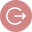

<mat-sidenav-container class="example-container">

    <mat-sidenav mode="side" opened id="sideNav">
               
               <button mat-button routerLink="/home" >List</button>
               <button mat-button id="activeButton" routerLink="faq">FAQ</button>
    </mat-sidenav>

    <mat-sidenav-content>
            
    </mat-sidenav-content>
  </mat-sidenav-container>
  <router-outlet></router-outlet>